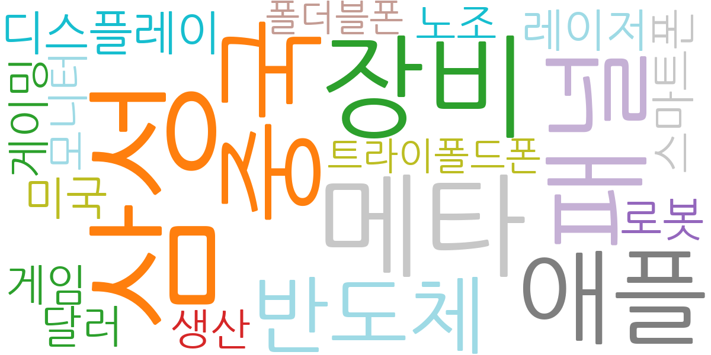
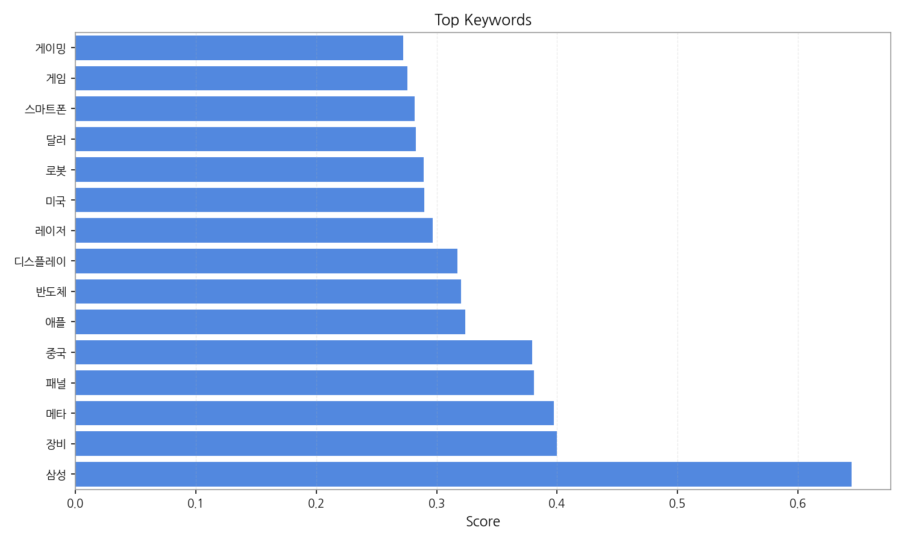
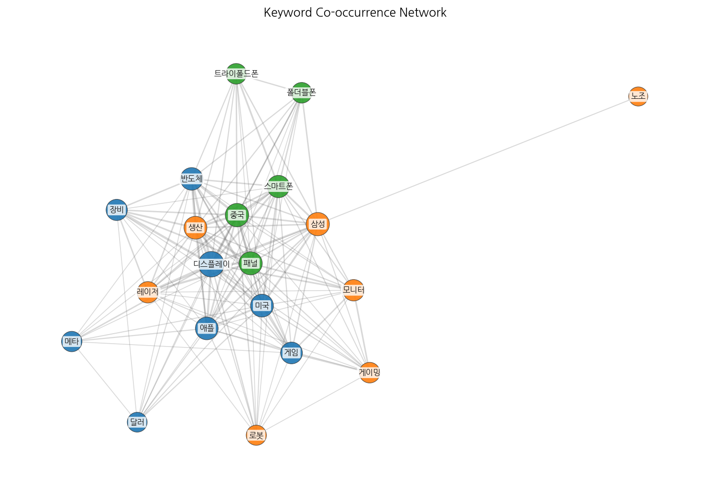
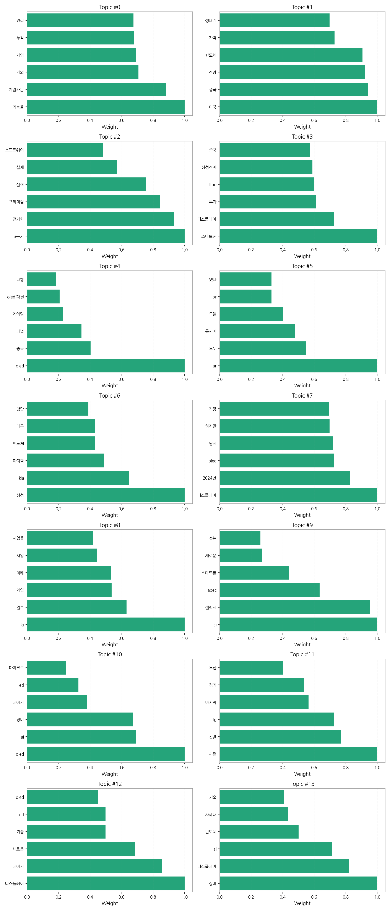
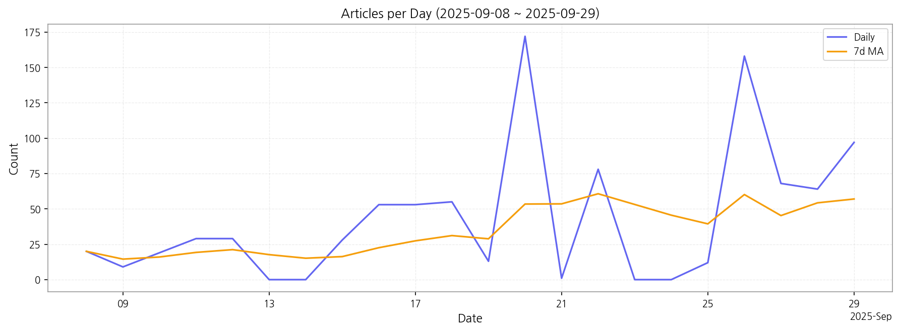

1. 핵심 맥락:
2. 최근 변화/스파이크:
3. 실무 인사이트:

| Rank | Keyword | Score |
|---|---|---|
| 1 | 삼성 | 0.645 |
| 2 | 장비 | 0.400 |
| 3 | 메타 | 0.398 |
| 4 | 패널 | 0.381 |
| 5 | 중국 | 0.379 |
| 6 | 애플 | 0.324 |
| 7 | 반도체 | 0.320 |
| 8 | 디스플레이 | 0.317 |
| 9 | 레이저 | 0.296 |
| 10 | 미국 | 0.290 |
| 11 | 로봇 | 0.289 |
| 12 | 달러 | 0.282 |
| 13 | 스마트폰 | 0.282 |
| 14 | 게임 | 0.276 |
| 15 | 게이밍 | 0.272 |




1. 핵심 맥락:
2. 최근 변화/스파이크:
3. 실무 인사이트:
| Idea | Target | Value Prop | Score |
|---|---|---|---|
| 초고해상도 마이크로 OLED 기반 AR 글래스 레퍼런스 디자인 | 북미 빅테크 기업 (AR/VR/XR 기기 개발 부서) | 업계 최고 수준의 해상도와 명암비를 제공하는 마이크로 OLED 디스플레이, AR 글래스 디자인 및 광학 설계 노하우 제공, AI 기반 콘텐츠 최적화 기술을 통한 성능 극대화 | 4.50 |
| AI 기반 차량용 HUD 증강 현실 솔루션 | 글로벌 완성차 OEM (프리미엄 브랜드 중심) | AI 기반의 실시간 객체 인식 및 예측을 통해 운전 안전성 극대화, 차세대 AR HUD 경험 제공, 경쟁사 대비 월등한 몰입감과 정보 정확도 제공 | 4.20 |
| AI 기반 디스플레이 공정 자동화 및 수율 개선 솔루션 | 디스플레이 제조사 (OLED, MicroLED) | AI 기반의 실시간 공정 모니터링 및 제어, 불량 예측 및 원인 분석, 생산 효율성 향상 및 비용 절감, 경쟁사 대비 뛰어난 기술력 및 노하우 제공 | 4.00 |
| IT 기기용 벤더블 OLED 패널 솔루션 | 글로벌 IT 기기 제조사 (노트북, 태블릿, 모니터) | 자유로운 폼팩터 변환을 통한 휴대성 및 사용성 극대화, 고화질/저전력 OLED 디스플레이, 경쟁사 대비 뛰어난 내구성 및 신뢰성 확보 | 3.80 |
| 차량용 디스플레이 신소재 개발 및 공급 | 차량용 디스플레이 제조사, 글로벌 완성차 OEM | 극한 환경에서도 안정적인 성능을 보장하는 고성능 신소재, 디스플레이 수명 연장 및 안전성 향상, 경쟁사 대비 뛰어난 가격 경쟁력 | 3.50 |